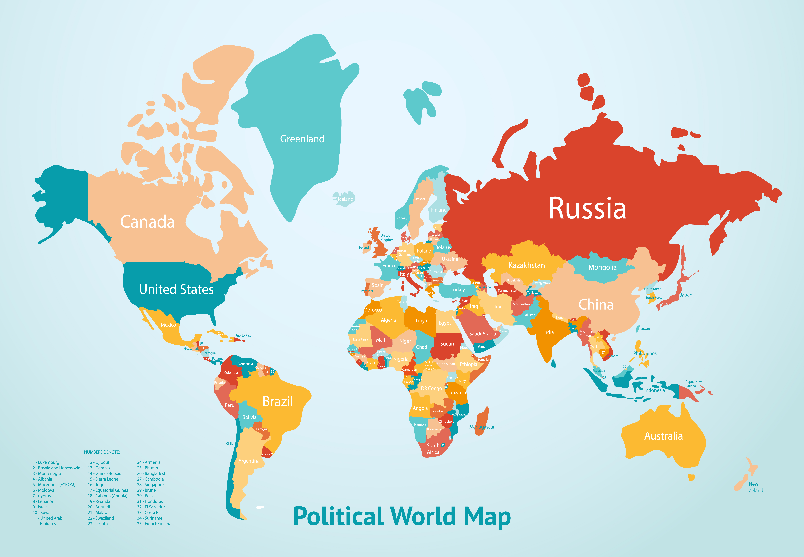

Home
About
Resume
GeoBoard
Blogs
Contact
Home
About
Resume
GeoBoard
Blogs
Contact
Portfolio
All
Cartography
Space Science
Land Management
Remote Sensing
Space Science
Satellite Navigation System

Cartography
World Political Map
Land Management
Land Use Planning and Its Applications
Sapce Science
Global Navigation Satellite System
Cartography
Closeness Centrality Street Network Analysis of Pokhara Metropolitan City
Space Science
Global Navigation Satellite System
Cartography
Resolve Biomes of Nepal
Remote Sensing
Satellite Image Comparison
Cartography
Study Area Map of Sunil-Smriti Rural Municipality-8, Aresh, Rolpa